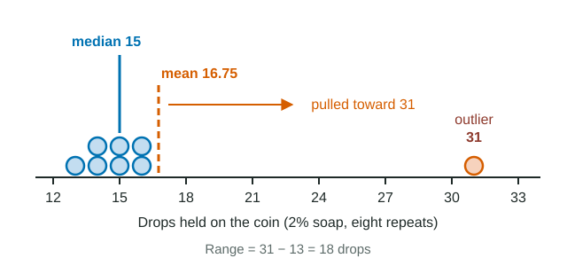

Mean, median, mode and range
Repeated measurements vary, so you summarize a sample with a center and a spread.
Part 1 · Hook
Why this matters
Pile drops of water onto a coin and the water bulges into a dome before it spills. Try it eight times and you will not get the same count twice: 31, 28, 33... Which number do you report? Every experiment in this course hits this problem, and four simple numbers solve most of it.
Part 2 · Prerequisite check
Quick check before you start
1. Why can a coin hold a dome of water that rises above its edge?
- Hydrogen bonds pull surface water molecules toward each other, giving the surface tension.
- Covalent bonds form between the water and the metal, gluing the dome in place.
- Air pressure pushes down on the dome harder than gravity pulls on it.
Show the answer
Cohesion: water molecules at the surface are pulled inward and sideways by hydrogen bonds to their neighbors, so the surface acts like a stretched skin.
- Correct: Hydrogen bonds pull surface water molecules toward each other, giving the surface tension.:
- Covalent bonds form between the water and the metal, gluing the dome in place.:
- Air pressure pushes down on the dome harder than gravity pulls on it.:
2. Soap molecules crowd in between water molecules at the surface. What happens to the number of drops the coin can hold?
- It falls, because fewer hydrogen bonds hold the surface together.
- It rises, because soap makes each drop smaller.
- It does not change, because soap does not mix with water.
Show the answer
Soap at the surface interrupts hydrogen bonding between water molecules, lowering surface tension, so the dome breaks sooner.
- Correct: It falls, because fewer hydrogen bonds hold the surface together.:
- It rises, because soap makes each drop smaller.:
- It does not change, because soap does not mix with water.:
Part 3 · See it
See it first

Part 4 · Step by step
How it works, step by step
- You measure the same thing several times (drops on a coin, eight times).The values differ a little each time, so no single value is "the answer": you have a sample.
- You add all eight values and divide by 8.You get the mean, a center that uses every value, for example 248 ÷ 8 = 31.0 drops.
- Because every value adds to the sum, one extreme value (31 among values near 15) adds a lot.The mean is dragged toward that outlier (16.75 instead of about 14.7).
- Sorting the values and taking the middle one (or the average of the middle two) ignores how big the end values are.The median stays with the cluster (15), so it is the better center when there is an outlier.
- Two samples can share a center but differ in how scattered they are.You also report spread, starting with the range (largest − smallest), to show how consistent the measurements were.
Part 5 · Key ideas
Key ideas
- Worked example. Counts 31, 28, 33, 30, 29, 35, 30, 32. Mean = 248 ÷ 8 = 31.0. Sorted: 28, 29, 30, 30, 31, 32, 33, 35; median = (30 + 31) ÷ 2 = 30.5. Mode = 30 (it appears twice). Range = 35 − 28 = 7.
- The mean uses the size of every value; the median uses only position. When a data set has an outlier or is lopsided, the two disagree, and the median describes a typical value better.
- Always pair a center with a spread. Two groups with the same mean of 25 drops can have ranges of 2 and 13: the second is far less consistent.
- Quantitative data are numbers (counted drops are discrete; measured mass or time are continuous). Qualitative data are categories. You can average numbers, not categories.
Part 6 · Misconception
A common mistake
The wrong idea: An outlier is a mistake, so you should delete it before calculating the mean.
What actually happens: An outlier is first checked for a recording or procedure error. If none is found it is real data: keep it, report it, and use the median (which resists it) alongside the mean.
Part 7 · Check yourself
Check yourself
Exam-style questions. Anything you miss goes into your review queue.
Data table
Drops of water on a coin
A class counted how many drops of water they could pile onto a clean coin before the dome of water spilled over. Each group used the same dropper and the same type of coin. Soap was added to the water at three concentrations, and each concentration was measured eight times.
| Soap in water (%) | Drops counted, eight repeats (drops) |
|---|---|
| 0 | 31, 28, 33, 30, 29, 35, 30, 32 |
| 1 | 22, 19, 21, 23, 20, 21, 24, 22 |
| 2 | 14, 16, 13, 15, 31, 14, 16, 15 |
1. Calculate the mean number of drops held on the coin with 0% soap. Give your answer to one decimal place.
Type a number in drops.
Show the answer
Sum = 31 + 28 + 33 + 30 + 29 + 35 + 30 + 32 = 248 drops. Mean = 248 ÷ 8 = 31.0 drops.
- Answer: 31.0 drops
2. Calculate the median number of drops for the 2% soap water. Give your answer to one decimal place.
Type a number in drops.
Show the answer
Sorted: 13, 14, 14, 15, 15, 16, 16, 31. With eight values the median is the average of the 4th and 5th values: (15 + 15) ÷ 2 = 15.0 drops. Forgetting to sort first gives the wrong middle pair.
- Answer: 15.0 drops
3. The mean for the 2% soap water is 16.75 drops. Which statement best explains why the median describes a typical count for this concentration better than the mean does?
- One count of 31 is far above the others and pulls the mean upward, while the median stays in the middle of the cluster.
- The median is calculated from more of the values than the mean is, so it carries more information about the whole sample of eight counts.
- The mean is meant for data sets in which no value repeats, and this set repeats several of its values.
- The counts at 2% soap are more tightly clustered than at 0% soap, so a mean exaggerates their center.
Show the answer
Seven of the eight counts lie between 13 and 16. The single 31 adds a large amount to the sum, so the mean (16.75) sits above every value but one. The median (15) depends only on the middle of the sorted list, so the outlier barely moves it.
- Correct: One count of 31 is far above the others and pulls the mean upward, while the median stays in the middle of the cluster.: Correct. An extreme value drags the mean toward it; the median depends on position, not size, so it resists the pull.
- The median is calculated from more of the values than the mean is, so it carries more information about the whole sample of eight counts.: The mean uses every value; the median uses only the middle one or two. That is exactly why the median ignores the outlier.
- The mean is meant for data sets in which no value repeats, and this set repeats several of its values.: Repeated values do not stop you from averaging. A mean can always be calculated for quantitative data.
- The counts at 2% soap are more tightly clustered than at 0% soap, so a mean exaggerates their center.: The range at 2% (18 drops) is the largest of the three concentrations, so these data are the least tightly clustered.
4. Select ALL statements that are supported by the data in the table.
- Adding soap lowered the typical number of drops the coin could hold.
- The 1% soap data have two modes, 21 and 22 drops.
- Removing the 31 from the 2% data would lower the median from 15 to 14 drops.
- The range of the 1% data is larger than the range of the 0% data.
- The 0% and 1% data overlap: some 1% counts are higher than some 0% counts.
Show the answer
Medians fall from 30.5 to 21.5 to 15 drops as soap rises. At 1%, both 21 and 22 appear twice. Ranges: 0% is 35 − 28 = 7; 1% is 24 − 19 = 5. The largest 1% count (24) is below the smallest 0% count (28), so the sets do not overlap. Removing the 31 leaves seven values, and the 4th of 13, 14, 14, 15, 15, 16, 16 is still 15.
- Correct: Adding soap lowered the typical number of drops the coin could hold.: Supported: mean and median both fall at each step up in soap.
- Correct: The 1% soap data have two modes, 21 and 22 drops.: Supported: 21 and 22 each appear twice and no value appears more often.
- Removing the 31 from the 2% data would lower the median from 15 to 14 drops.: Not supported: with seven values left, the median is the 4th sorted value, which is still 15.
- The range of the 1% data is larger than the range of the 0% data.: Not supported: the 1% range is 5 drops and the 0% range is 7 drops.
- The 0% and 1% data overlap: some 1% counts are higher than some 0% counts.: Not supported: the highest 1% count, 24, is lower than the lowest 0% count, 28.
5. A student re-checks the 2% notebook and finds the 31 was a copying mistake for 13. After the correction, which describes the change in the mean and the median?
- The mean drops by 2.25 drops and the median drops by 0.5 drops.
- The mean drops by 2.25 drops and the median does not change.
- The mean drops by 18 drops and the median drops by 0.5 drops.
- The mean and the median both drop by 2.25 drops.
Show the answer
The sum falls by 31 − 13 = 18 drops, shared over 8 values: 18 ÷ 8 = 2.25 drops lower (16.75 to 14.5). Re-sorted, the corrected set is 13, 13, 14, 14, 15, 15, 16, 16, so the middle pair becomes 14 and 15 and the median falls from 15 to 14.5.
- Correct: The mean drops by 2.25 drops and the median drops by 0.5 drops.: Correct: the mean falls 2.25 drops and the median 0.5 drops.
- The mean drops by 2.25 drops and the median does not change.: The mean change is right, but re-sort the corrected data: a new low value shifts the middle pair to 14 and 15.
- The mean drops by 18 drops and the median drops by 0.5 drops.: The sum drops by 18, but that change is shared across 8 values, so the mean drops by 2.25, not 18.
- The mean and the median both drop by 2.25 drops.: The mean change is right; the median depends on position in the sorted list, so it moves by a different amount.
6. A data set of counts is 4, 7, 7, 9, 12. Which change would raise the mean but leave the median and the range unchanged?
- Changing the 9 to 11
- Changing the 12 to 15
- Changing the 4 to 6
- Changing one 7 to 9
Show the answer
Changing 9 to 11 raises the sum by 2, so the mean rises. Sorted, the set is 4, 7, 7, 11, 12: the middle value is still 7 and the range is still 12 − 4 = 8.
- Correct: Changing the 9 to 11: Correct: the sum goes up, the 3rd value stays 7, and the smallest and largest stay 4 and 12.
- Changing the 12 to 15: The mean rises, but the largest value changes, so the range becomes 11.
- Changing the 4 to 6: The mean rises, but the smallest value changes, so the range shrinks to 6.
- Changing one 7 to 9: The mean rises, but the sorted set becomes 4, 7, 9, 9, 12, so the median moves to 9.
7. Group P measured drops on a coin and got 24, 25, 25, 26, 25 (mean 25). Group Q got 18, 31, 25, 22, 29 (mean 25). Which conclusion is best supported?
- The groups found the same center, but Q's values vary much more, so a single Q measurement is less dependable.
- The groups found the same center and the same spread, because their means are equal.
- Group Q measured more carefully, because its values cover a wider range of possible counts and so represent more of the possible outcomes.
- Group P probably made an error, because real counts of drops rarely repeat so closely.
Show the answer
Equal means say nothing about spread. P's range is 2 drops; Q's is 13 drops. Wider spread means any single measurement from Q could land far from the center.
- Correct: The groups found the same center, but Q's values vary much more, so a single Q measurement is less dependable.: Correct: same mean, very different ranges.
- The groups found the same center and the same spread, because their means are equal.: The means match, but the ranges (2 and 13) show the spreads differ.
- Group Q measured more carefully, because its values cover a wider range of possible counts and so represent more of the possible outcomes.: Wider spread usually means less consistent technique, not more careful work.
- Group P probably made an error, because real counts of drops rarely repeat so closely.: Repeated identical counts are expected with careful technique; repetition is not evidence of error.
Part 8 · Summary
Summary
Repeated measurements vary, so you summarize a sample with a center and a spread. The mean (sum ÷ n) uses every value and is pulled by outliers; the median (middle of the sorted data) resists them; the mode is the most common value. The range (largest − smallest) is the simplest measure of spread. Check an outlier for errors before deciding anything about it.
Part 9 · Up next
What comes next
Part 10 · Connections